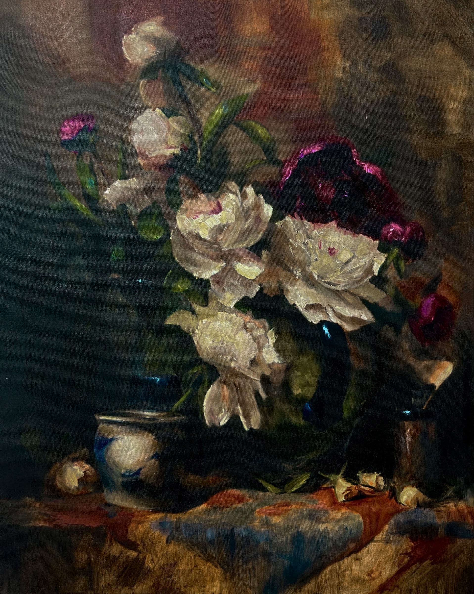
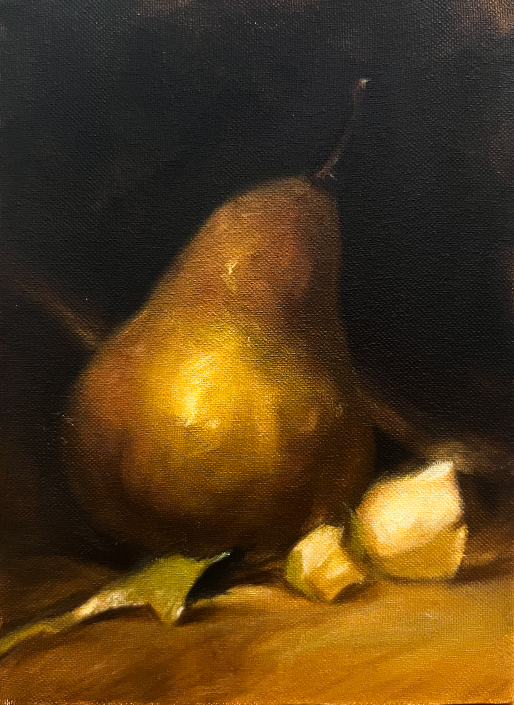
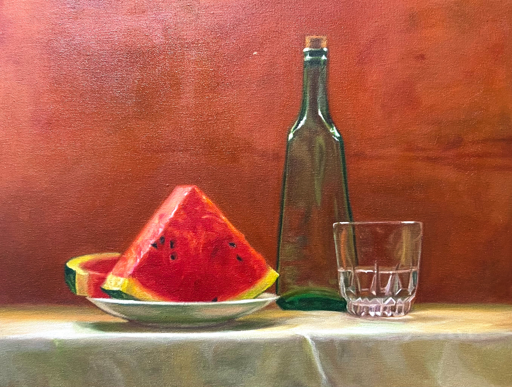
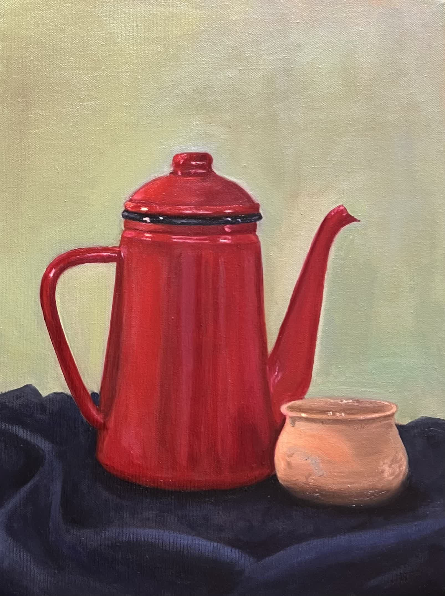
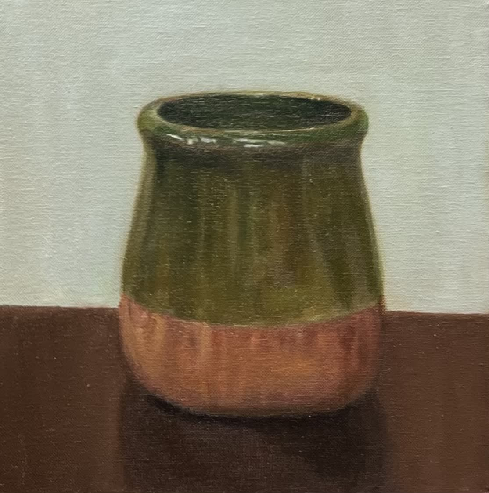
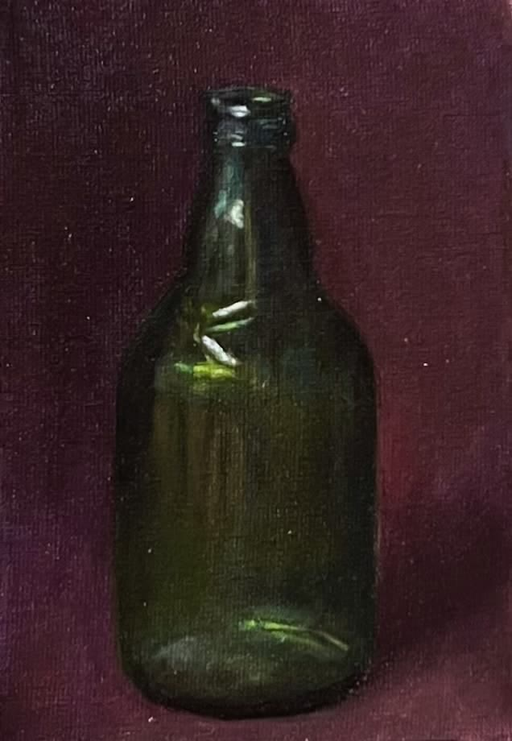
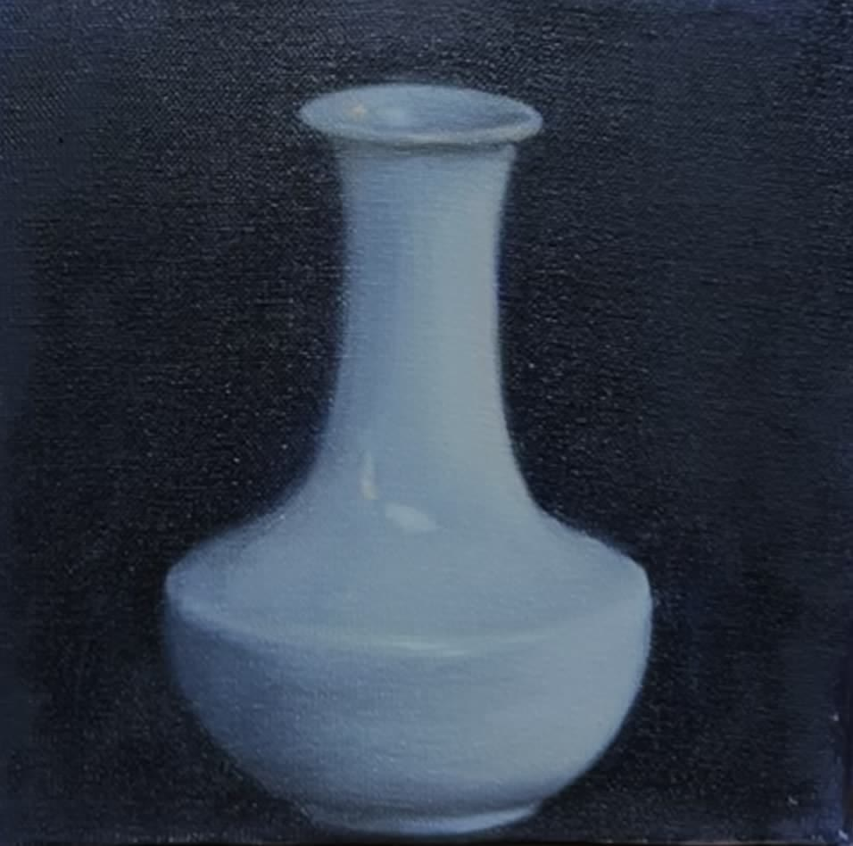
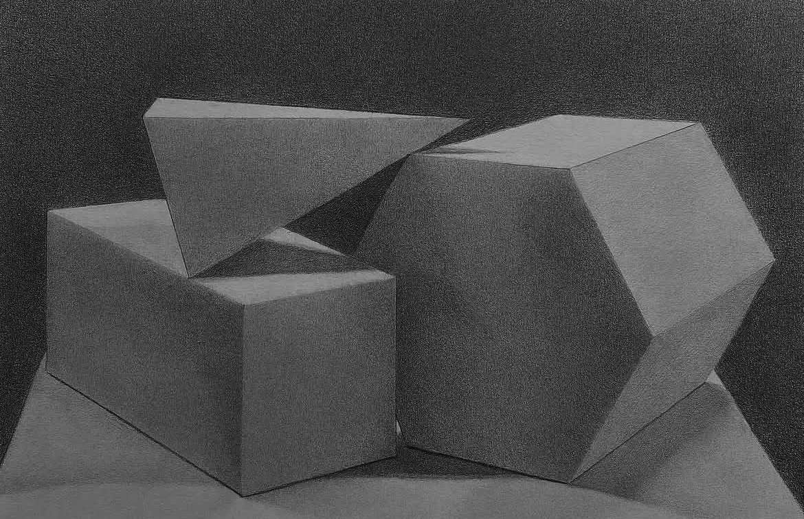

01
Silent Splendor
Master study

View projectVisual artist · Painter
01
Portfolio
01
Master study

View project02
Master study
 View project
View project
03
Master study
 View project
View project
04
Observational study

View project05
Observational study

View project06
Observational study

View project07
Observational study

View project08
Observational study

View project09
Observational study

View project10
2 finished studies

View series11
Drawing study
 View project
View project
02
About
Mina is a visual artist and psychology graduate whose work brings together careful observation, empathy, and a strong visual sense.
Five years of structured fine-art training developed her approach to composition, colour, patience, and detail. Her background in psychology adds a lasting curiosity about people, perception, and communication.
Alongside her art practice, she creates visual content and supports online customer communication for a family-owned furniture brand.
03
Contact